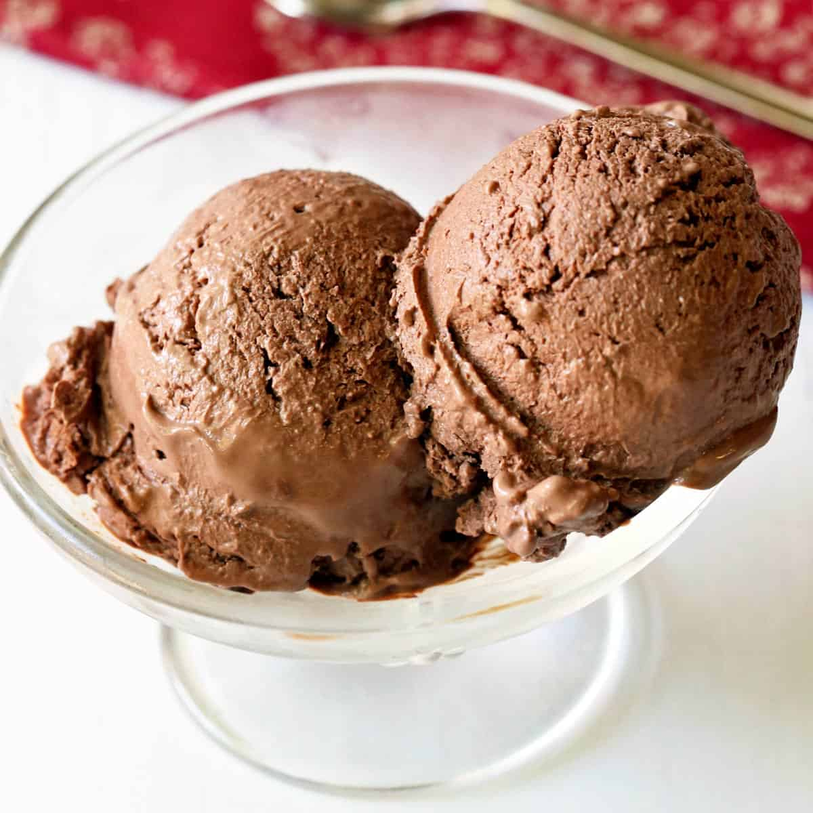

Chocolate Chip Cookies

Description
Wonderfully rich chocolate frozen yogurt recipe. The taste is like chocolate cream pie filling with
a bit of tang from the yogurt. It has lots of calcium but is low in fat and calories. A sweet treat
you can feel good about!
Ingredients
- 3/4 cup white sugar
- 2 teaspoons cornstarch
- 1 can fat-free evaporateed milk
- 1/2 cup semisweet chocolate chips
- 1 cup plain lowfat yogurt
- 1 teaspoon vanilla extract
Steps
- Combine sugar and cornstarch in a medium saucepan. Stir in evaporated milk and chocolate chips.
Cook over medium heat, stirring constantly, until chocolate is melted and mixture is thickened.
- Remove the saucepan from heat and stir in yogurt and vanilla. Refrigerate until chilled.
- Pour chilled mixture into an ice cream maker. Freeze according to the manufacturer's instructions.